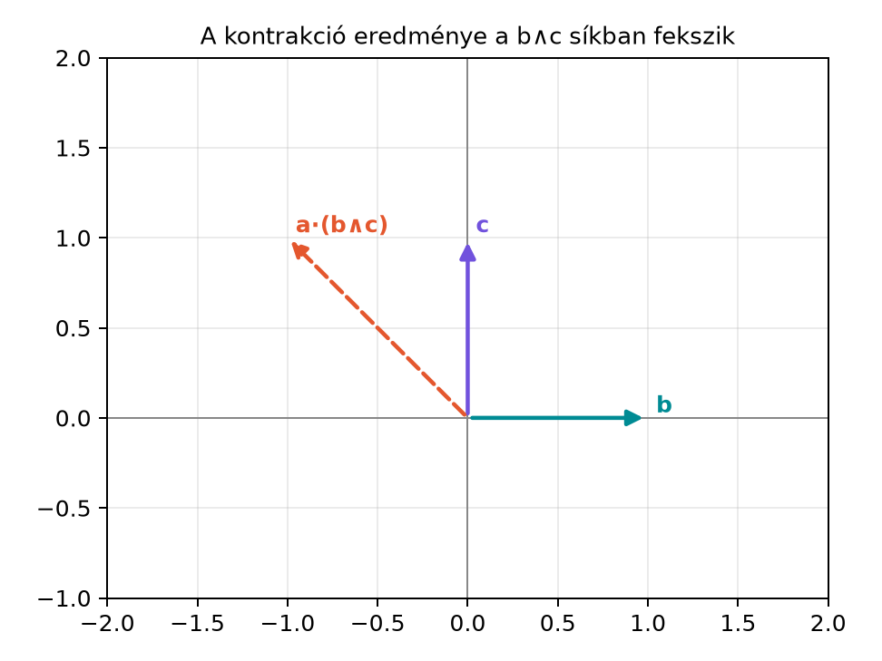

A klasszikus vektorazonosságokat indexekkel vagy rajzolgatással
igazolni gyakran fáradságos. A geometriai algebrában ugyanezek az
azonosságok rövid, koordinátamentes alakot öltenek, és egyetlen
alapelvből, a kontrakció általános
definíciójából következnek. Ebben az alfejezetben a leggyakrabban
használt belső szorzat-azonosságokat vezetjük le. Ezek az átalakítások
később visszaköszönnek a fizikai alkalmazásokban is, ahol a hagyományos
vektoriális szorzatos képletek helyett elegánsabb, dimenziófüggetlen
alakokat használhatunk.
A fő kérdés: ha egy vektort egy bivektorral vagy trivektorral
„pontozunk”, hogyan fejezhető ki az eredmény a közönséges
skalárszorzatokkal és külső szorzatokkal?
9.3.2 Szemléletes kép
Tekintsük a
térben a
vektorokat. A
bivektor az
-síkot
reprezentálja. Azt várjuk, hogy a kontrakció
eredménye ebben a síkban marad, tehát az
irányok kombinációja lesz, és az
-komponens
eltűnik. Az ábra ezt a síkbeli helyzetet mutatja:

A kontrakció eredménye a b∧c síkban
fekszik - A b = e1 és c = e2 vektorok a síkot feszítik. Az a·(b∧c) = e2
− e1 vektor ebben a síkban marad; a merőleges e3-komponens nem ad
járulékot.
derivációs szabályt, ahol
fokszáma
.
Most legyen
és
,
mindkettő vektor, tehát
.
Ekkor
Mivel vektorokra
,
továbbá a skalárral való külső szorzás közönséges skalárral való
szorzás, kapjuk:
Ezt a könyv jelölésében, vektorra
,
így is írhatjuk:
Ezt az azonosságot a klasszikus vektoralgebra „BAC−CAB” szabálya
geometriai algebrai alakjának nevezzük; maga a klasszikus szabály a
kettős vektoriális szorzatnál jelenik meg.
Tétel (BAC−CAB GA-alakja). Tetszőleges
vektorokra
Bizonyítás. A fenti levezetés a bal kontrakció
derivációs szabályának közvetlen alkalmazása. A lépések:
Alkalmazzuk a derivációs szabályt
,
,
esetén.
,
így az első tag
.
,
így a második tag
.
Összeadva a két tagot a tétel azonosságát kapjuk.
9.3.4 Kidolgozott példa
Számítsuk ki a motivációban szereplő
vektorokra a
értékét.
Először a bivektort képezzük:
Ezután a kontrakciót lineárisan kifejtjük:
A három tagot külön-külön számoljuk a BAC−CAB azonossággal:
Összegezve:
Most ellenőrizzük a tétel jobb oldalával is:
A két oldal egyezik. Figyeljük meg, hogy az
-komponens
valóban eltűnt, mert
merőleges a
síkra.
9.3.5 Általánosítás trivektorra:
Ugyanezzel a derivációs szabállyal eggyel magasabb fokszámra is
kifejthetjük a kontrakciót. Írjuk a trivektort
alakba. Ekkor
fokszáma
,
ezért
A zárójelben lévő bivektoros kontrakciót a már bizonyított
azonossággal fejtjük ki:
Behelyettesítve:
A skalárszorzatok skalárok, ezért a külső szorzatból egyszerűen
kiemelhetők:
Ez az eredmény bivektor, és a három tag éppen azokat a bivektorokat
tartalmazza, amelyek az
vektor
vektorokkal vett páros belső szorzatain keresztül „szeletelik” a
trivektort.
Most már be tudjuk helyettesíteni a BAC−CAB GA-alakját:
Ez pontosan a klasszikus vektoralgebrai BAC−CAB szabály:
Tehát a hagyományos, indexeléssel igazolható azonosság a geometriai
algebrában egy kontrakciós előjelváltásból adódik.
9.3.7 Bivektorok belső szorzata és
a Lagrange-azonosság
A bal kontrakció definíciójából következik, hogy két azonos fokszámú
bivektor kontrakciója skalár, mégpedig a geometriai szorzatuk
skalárrésze:
Legyen
és
.
Ekkor
Ennek kiszámításához használjuk a geometriai szorzat négytényezős
skalárrész-lemmáját:
Szemléletes indoklás. Ortonormált bázisban a
szorzat skalárrésze csak akkor nem nulla, ha az indexek párban
kiegyenlítik egymást. A három lehetséges párosítás
,
,
;
a hozzájuk tartozó előjel a felcserélések paritásából adódik. Ebből
kapjuk a három fenti tagot.
Most írjuk fel
Ekkor
Mivel
és
,
ez tovább így egyszerűsödik:
A két kivonandó közül az egyik kiesik a hozzáadott taggal:
Behelyettesítve a négytényezős lemmát:
Tehát a könyv bal kontrakciós konvenciójával:
Más könyvekben a Hestenes-féle belső szorzatot a reverzióval
definiálják, például
.
Mivel
,
ott az előjel éppen fordított:
Ez utóbbi alak egyezik a klasszikus Lagrange-azonosság
előjelével.
A klasszikus Lagrange-azonosság a vektoriális szorzatok
skalárszorzatáról szól:
Ezt a geometriai algebrában a dualitással vezetjük le. Legyen
és
.
Ekkor
Mivel
minden multivektorral felcserélhető, és
:
A bal kontrakciós eredményből tudjuk, hogy
Ennek negatívja pontosan a klasszikus Lagrange-azonosság jobb oldalát
adja:
A kontrakció nem kommutatív. Általában
;
a fokszámok és az előjelek is eltérhetnek. A sorrendet mindig a
definíció szerint kell meghatározni.
Az eredmény fokszáma.
vektor, nem bivektor, és a
vektorok síkjában fekszik. Sokan tévesen bivektort várnak.
Előjel a kettős vektoriális szorzatnál. A
klasszikus szabály
,
nem pedig fordítva. A GA-alakban a negatív előjel a duális
definíciójából jön.
Bivektorok belső szorzatának előjele. A bal
kontrakció eredménye
,
míg a Hestenes-féle pont és a klasszikus Lagrange-azonosság előjele
ezzel ellentétes. A könyv a bal kontrakciót használja; más forrásokban
ellenőrizni kell a konvenciót.
A negyedik vektor szerepeltetése. A trivektoros
kifejtésben a tagok előjelei váltakoznak; egy kihagyott belső szorzat
vagy egy rossz sorrend előjelhibához vezet.
9.3.10 Feladatok
(a) Fogalmi kérdés. Milyen fokszámú
,
és miért fekszik az eredmény a
vektorok által kifeszített síkban?
(b) Kézi számolás. Legyen
Számítsa ki
értékét először a bivektor kifejtésével, majd a BAC−CAB
GA-alakjával.
(c) Levezetési feladat. Az antiderivációs szabályt
alkalmazva vezesse le a következő trivektoros azonosságot:
(d) Alkalmazási, Python-feladat. A mini könyvtár
MV3 osztályával és lcontract metódusával
ellenőrizze a (b) feladat eredményét. Hozza létre a vektorokat, képezze
a bivektort, majd számítsa ki a bal kontrakciót.
9.3.11 Megoldások
(a) Megoldás. A bivektor fokszáma 2, a vektor
fokszáma 1, így a bal kontrakció fokszáma
.
Az eredmény tehát vektor. A BAC−CAB azonosság jobb oldala
és
lineáris kombinációja, ezért az eredmény a
által kifeszített síkban fekszik.
(b) Megoldás. Először képezzük a bivektort:
Most kontrahálunk:
Korábban láttuk, hogy
Így
Ellenőrzés a BAC−CAB GA-alakjával:
Tehát
A két módszer eredménye egyezik.
(c) Megoldás. Alkalmazzuk a derivációs szabályt
alakkal. Mivel
fokszáma 1:
A belső kontrakciót a BAC−CAB azonossággal fejtjük ki: